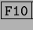

Hasta ahora hemos presentado a ambos tipos de aplicaciones como opuestas y sin conexión entre ellas. Pero en la vida real no es así, es muy común usar aplicaciones de texto en entornos gráficos Se utiliza un programa gráfico que emula (o simula como gusten) a una terminal de texto. Sobre esa terminal emulada se ejecutan las aplicaciones de texto como puede ser bash, un intérprete de comandos.
El bash a su vez puede ejecutar otra aplicación de texto. Este es el funcionamiento normal. Cuando utilizamos el programa gráfico konsole este emula una terminal ejecutando bash. Y a partir del bash tipeamos el nombre de otro programa (por ejemplo mc) para que se ejecute en esa terminal. Para salir del mc hay que presionar .
Pero no sólo se ejecutan aplicaciones de texto. También se pueden ejecutar aplicaciones gráficas que salgan en pantalla. Tranquilamente estando en konsole se puede tipear kedit y saldrá una ventana con el editor de texto.
Al probar esto último podemos observar que en konsole no aparece el prompt2.2. Existen dos alternativas: cerrar el editor de texto o apretar Ctrl-C para que konsole mate al editor.
Existen otras alternativas pero no se discutirán en este curso.